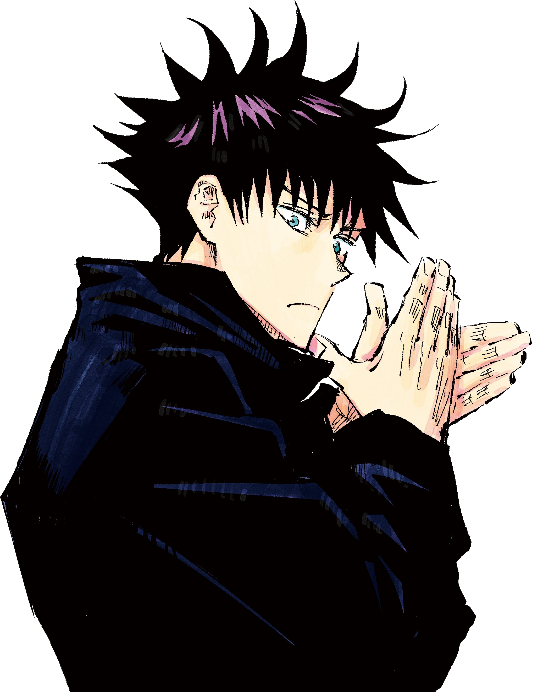

Heredero de la técnica de las 10 sombras.
Capaz de invocar ael General Divino de las Ocho Hojas Divergentes del Sila:
Fue el primer pupilo de el profesor Satoru Gojo
Tiene 15 años, su cumpleaños es el 22 de Diciembre.